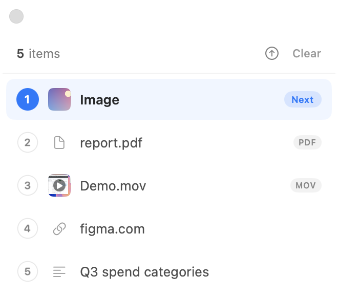
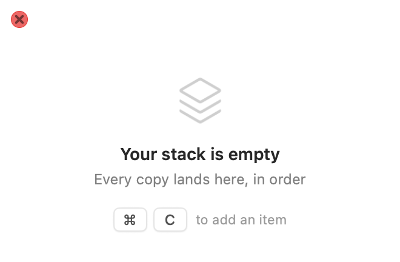
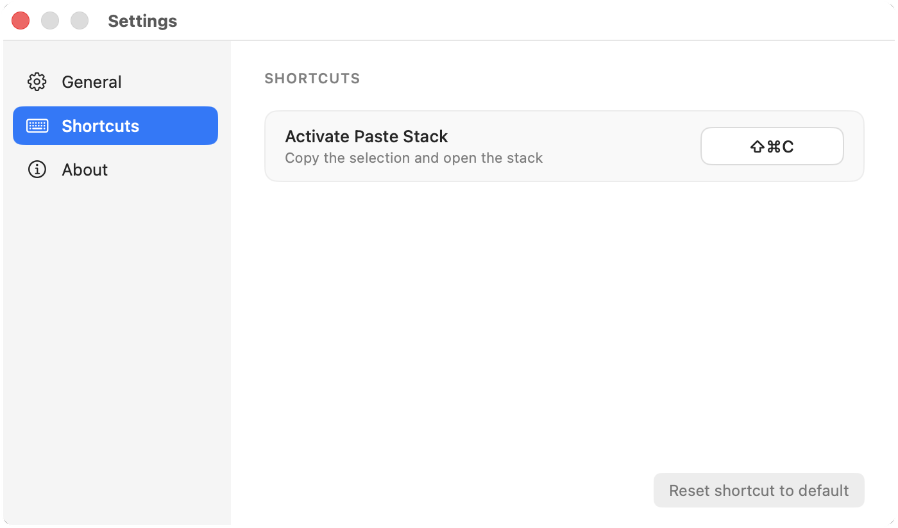
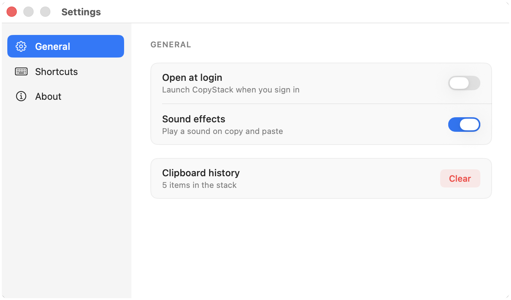
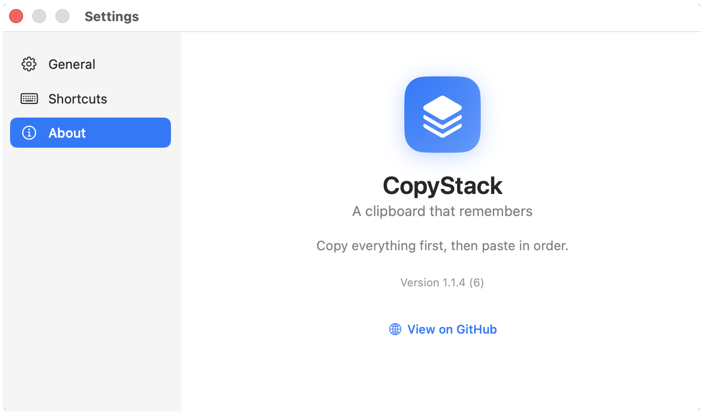

Aalinkimgmp4pdf
Captures everything you copy
Text, web links, images, videos and files - detected automatically. Videos keep their raw pasteboard data, so they re-paste perfectly into apps like Slack and WhatsApp.
macOS menu-bar app · v1.1.4
No more copy, switch, paste, switch back. Grab everything you need in one pass - CopyStack stacks it up and hands it back in order as you paste.
How it works
Monitoring only runs while the stack is open, so the rest of the time your ⌘V stays exactly as boring as it should be.
Hit the shortcut to copy your selection and pop open the floating stack. Everything you copy after that lands on top.
The stack is already open, so a plain ⌘C keeps adding - text, links, images, video, files, captured in the order you grab them.
Each ⌘V drops the next item and advances the stack. When it's empty, paste goes right back to normal.
Why it's nice
Text, web links, images, videos and files - detected automatically. Videos keep their raw pasteboard data, so they re-paste perfectly into apps like Slack and WhatsApp.
Items pop off the stack as you paste them - no scrolling a history, no picking.
Paste the last thing you copied first, or the first thing first. Flip the order with one click.
No Dock icon, no clutter. Polling runs only while the stack is open - light on your CPU.
Default is ⇧⌘C, but make it whatever you like in Settings.
Built-in “Check for Updates” pulls signed, notarized builds straight from GitHub Releases.
A closer look





Free, open source, and notarized. Drop it in your Applications folder and grant Accessibility once - that's the whole setup.
Requires macOS 13 Ventura or later · Accessibility permission (to simulate ⌘C / ⌘V)